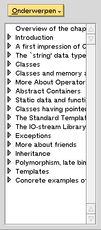
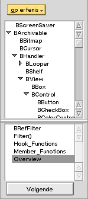
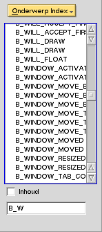
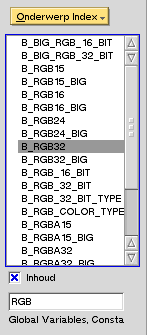

Het eerste wat u moet doen is een boek openen. Om dit te doen gaat u naar het 'Boek' menu en selekteert u een van de onderdelen. Een boek introduktie of index verschijnt dan in het venster, en aan de linkerkant zult u BeHappy's snelkoppelingen tegenkomen.
Hier zijn de snelkoppelingen voor het BeBook:
Het klik menu laat u de index kiezen die u wilt gebruiken. Met het BeBook heeft u vier indexen:
| Enkele lijst Gewoon een onderdeel in de lijst selecteren. |
Dubbele lijst Selecteer een onderdeel in de bovenste lijst, en meer details verschijnen in de onderste lijst. Selecteer een onderdeel in de onderste lijst om de corresponderende tekst te tonen in het tekstvenster. |
Lijst met zoekveld Voer gegevens in het invoerveld onderaan, en de lijst toont elk onderdeel dat start met hetgene u ingevoerd heeft. |
"Inhoud" optie Met deze optie geselekteerd, toont elk onderdeel dat overeenkomt met de invoer in de lijst. |
|  |  |  |  |
| Soms zult u een "Volgende" knop zien. Dat probeert dan de onderdelen te vinden die u geselecteerd heeft in de bovenste lijst en probeert het ergens anders te vinden. Dit is erg handig in de 'Op Erfenis' index in het BeBook, met classes die meerdere erfenissen hebben. |